Cultureadd_a_photo
Museums
V Museum Corfu
- 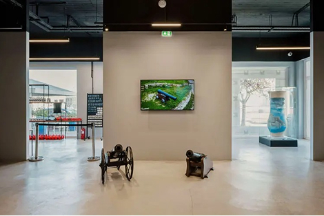
- 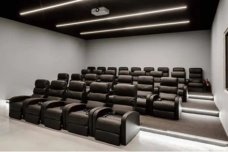
- 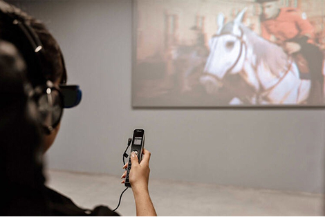
In the heart of Corfu, a pioneering cultural space has emerged, seamlessly blending technology with local heritage: the V Museum Corfu. It is the island’s first digital museum of virtual reality, showcasing Corfu's rich history and culture in impressive ways through interactive experiences and innovative applications.
A New Dimension in Culture
Hologram of Ioannis Kapodistrias: Greece’s first Governor comes to life before visitors, narrating his journey and vision for the Greek state. 3D Animation Film: A captivating audiovisual production narrates the evolution of Corfu, from Poseidon, Odysseus, and mythical heroes to the Venetians, the British, and the present day. Interactive Game with the Botides: Both young and older visitors can participate in an interactive floor game inspired by Corfu’s traditional Easter custom, trying to smash as many Botides (clay pots) as possible in one minute, offering a unique simulation experience.
Odysseus and the Journey to Ithaca
Among the museum’s highlights is the impressive physical representation of Odysseus. The sculpture is framed by two Doric columns and a classical pediment featuring the figures of Athena and Poseidon—deities who played a decisive role in his journey with their wisdom, power, and the trials they imposed upon him.Next to the sculpture, an interactive screen reveals the map of Odysseus’s travels, allowing visitors to follow his fascinating journey from Troy to Ithaca, through stops filled with myths, legends, and symbolic meaning.
The Musical Soul of Corfu
The museum dedicates a special section to the island’s musical heritage.
Fortifications, Cannons, and Memories of War
Through interactive exhibits and augmented reality, visitors discover Corfu’s strategic importance throughout history, exploring the cannons and robust fortifications that protected the island from invasions.
Maria Callas Museum
- 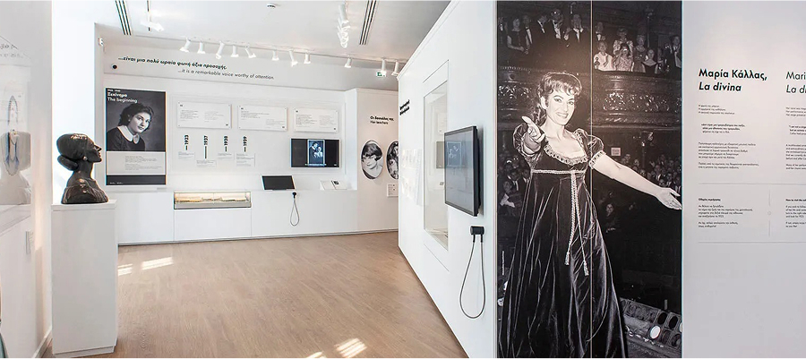
- 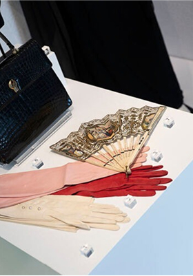
- 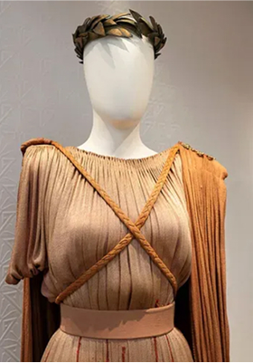
- 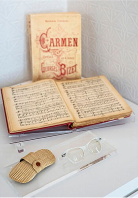
The first Museum in the world dedicated to Maria Callas, the legendary Greek soprano of the 20th century, opened its doors to the public in October 2023. This year marks the centennial anniversary of the Divina’s birth and is included in the UNESCO’s celebratory list of anniversaries for 2023.
The museum is housed in a beautiful historic building from the interwar period, located in Mitropoleos Street, in the heart of Athens. The space was created in order to inspire, entertain and showcase the remarkable technical elements that made her unique worldwide.
Visit the museum and experience an immersive journey that will provide you with a comprehensive understanding of the different aspects of her career, personality and life, beyond the myths that follow her name. The museum’s exhibits include distinct and special items that belonged to this multifaceted artist, who managed to change the world of opera forever with her broad voice range, unique sound palette and stage charisma.
Archaeological Sites & Monuments
The Bridges of Grevena
The dense network of small rivers, including Smixiotikos, Velonias, Dotsikiotikos and Pramoritsas, converge to create larger ones, such as Venetikos, Grevenitis and Stavropotamos, to finally end up in Aliakmonas, the largest river that flows entirely within Greece. Frequently impetuous, these rivers created difficulties in communication both between villages and among larger towns. This created the need for bridges, which was met by skilled stone masons, Epirotes and locals. Built mostly between the 18th and the 19th century, the stone bridges of Grevena have been declared scheduled monuments since 1995 and are of course a good reason to visit the area.
The bridge of Stavropotamos over the like-named tributary, which converges with Venetikos River, is roughly 20 km from Grevena, near Kipoureio village. The bridge was formerly part of the road from Thessaloniki to Ioannina. With four unequal large arches, it has a length of 48 metres and was built around 1880. Close by is Spanos bridge which links the two banks of the Venetikos River.
This five-arch bridge, made from skilfully hewn stones, reaches up to 85 metres in length and is the largest surviving stone bridge in Macedonia. The impressive three-arch bridge of Aziz Aga, which also bridges the Venetikos River, is near the village of Trikomo. The 70-metre-long bridge was built in 1727 as per the local tradition, after a number of hurdles were overcome, and its central arch has a 15-metre span. Near Trikomo, but more difficult to get to, is the double-arch Kagelia bridge stretching for 40 metres, also over the Venetikos River.
Ziakas bridge, which was once part of Vasiliki Strata (Royal Road) leading to Thessaly region, is located just outside the village of the same name. It has two uneven arches and a length of 41 metres, spanning the banks of Velonias River. Portitsa bridge in the village of Spilaio is located at the exit of Portitsa gorge and is perhaps the most beautiful and popular bridge in the area.
Dispilio of Kastoria
The oldest Neolithic settlement in EuropeThe settlement of Dispilo, officially the oldest Neolithic settlement in Europe, is located 8km from the town of Kastoria (on the road Kastoria - Argos Orestiko). Dispilio was accidentally discovered when in 1932 the level of Kastoria lake dropped and traces of wooden stakes were revealed.
The excavations lasted many years and gradually brought to light invaluable finds dating back to the Neolithic era, including the plaque of Dispilio (5260 BC) around the end of the Middle Neolithic period. Excavations continued systematically at the site revealing more information about a large and structured lake settlement of the Middle and Late Neolithic era. It was not only the oldest found lake settlement found in Europe, but also one of great significance for the continent as well as for Greek archaeology, as it was the first one that was ever unearthed in the country.
Scholars have concluded that the settlement of Dispilo was a highly organized society of around 3,000 people. The findings that have come to light prove that the inhabitants of the settlement made tools and utensils from everyday materials found in nature, bred animals, developed their own writing system and created an early form of music. They fished to cover their basic feeding needs and had found various ways to store food. The houses were either built in a circular or in a rectangular shape while some were placed in the lake, resting on stakes that protected them from water.
Venues
-
Planetarium
- 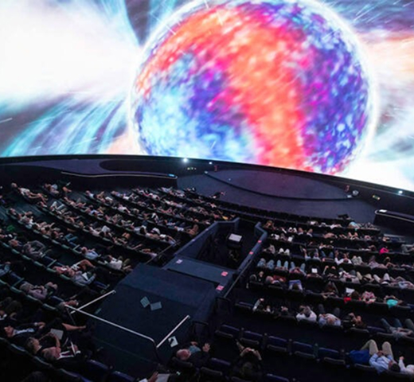
- Touch the stars in one of the best and largest planetariums in the world!
- 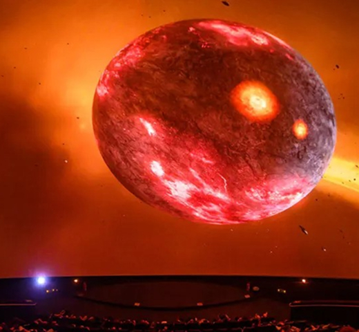
- 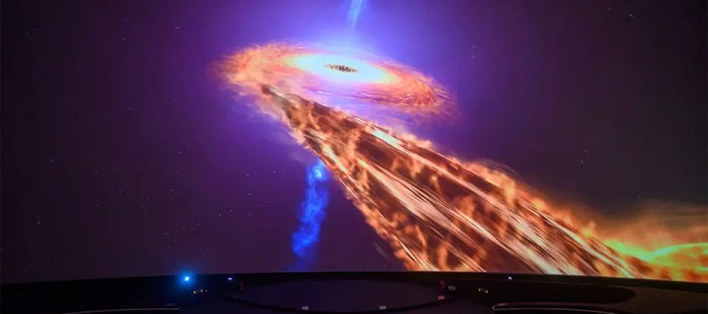
- 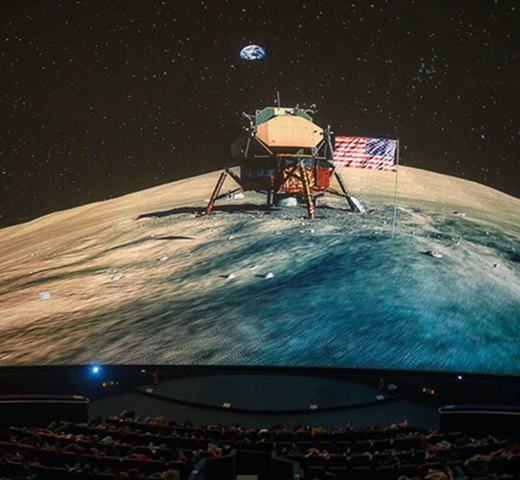
- 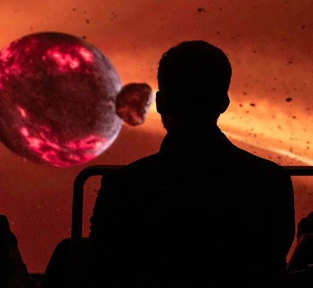
- 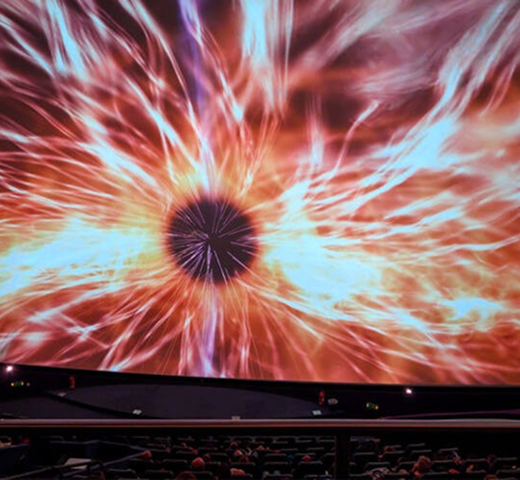
- 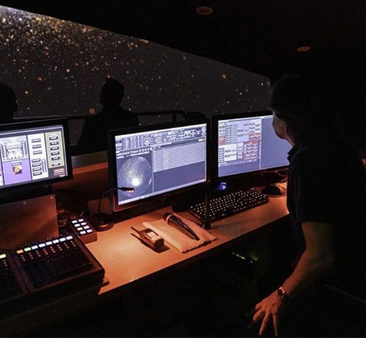